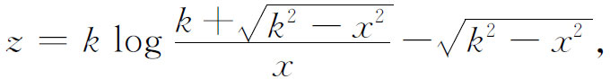
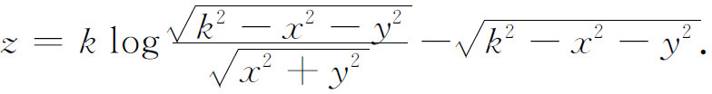
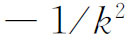
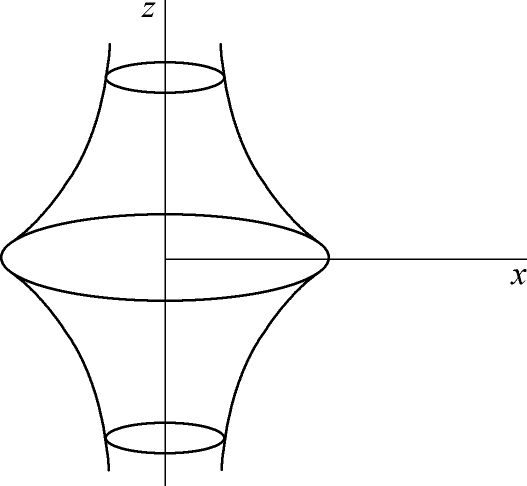

2．作为非欧几里得几何模型的曲面
继黎曼工作之后，最重要的几何要算是常曲率空间的几何了。黎曼自己在他1854年论文中指出，只要把球面上的测地线取作“直线”，就能够在球面上实现一个二维的正的常曲率空间。这种非欧几里得几何，现在称为二重椭圆几何，理由以后将会明白。在黎曼的工作以前，高斯、罗巴切夫斯基和约翰·波尔约的非欧几里得几何，后来克莱因称为双曲几何，是在平面上的几何，引进普通直线（自然是无穷直线）作为测地线。这种几何和黎曼几何的关系是不清楚的。黎曼和明金(1)曾考虑到负的常曲率的曲面，但他们两人都未指出与双曲几何的关系。
贝尔特拉米不依赖于黎曼而独自认识到(2)常曲率的曲面是非欧几里得几何空间。他在曲面上给出双曲几何的有限表示法(3)，这证明了双曲平面有限部分的几何在负的常曲率的曲面上成立，只要把曲面上的测地线看作直线。曲面上的长度和角度就是普通欧几里得几何曲面上的长度和角度。一个这样的曲面名为伪球面（图38.1），它是由一条名为曳物线（tractrix）的曲线绕渐近线旋转而成的，曳物线方程是

曲面方程为

曲面的曲率为

。于是伪球面是高斯、罗巴切夫斯基和约翰·波尔约的平面有限部分的模型。在伪球面上的一个图形可以移动并适当弯曲使之与曲面吻合，正如同一个平面图形可以弯曲使之与圆柱面吻合一样。
图38.1
贝尔特拉米证明一块罗巴切夫斯基平面可以在负常曲率曲面上实现。然而没有负常曲率的正则解析曲面使得全部罗巴切夫斯基几何在其上成立。所有这种曲面有一条奇异曲线——切平面经过它时不连续——所以经过此曲线的曲面的延拓不能使代表罗巴切夫斯基几何的图形连续。这是希尔伯特得出的结果(4)。
这方面还值得指出的是，利布曼（Heinrich Liebmann，1874—1939）(5)证明了球面是唯一正的常曲率封闭解析曲面（无奇异点），从而是唯一能用来作为二重椭圆几何的欧几里得模型。
这些模型的发展帮助数学家了解并看出基本非欧几里得几何的意义。必须记住，这些二维的非欧几里得几何基本上就是平面几何，其中的直线与角是欧几里得几何中通常的直线与角。双曲几何虽是以这种方式来论述的，但数学家似仍感其结论奇异，只是勉强承认它们属于数学。黎曼以微分几何观点提出的二重椭圆几何，甚至还没有像平面几何的公理推导。于是数学家只能从球面上的几何所提供的线索来看出它的一点意义。只是通过为寻求欧几里得几何与射影几何的关系，人们才从另一方面的研究，对这些非欧几里得几何的性质获得好得多的理解。